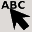
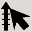

コントロールボタン
メニューの下のコントロールボタンを使って, より効果的にグラフを作成できます。
コントロールボタンではLegend位置のマウスによる入力や評価機能など，メニューにはない機能も割り当てられています。
次のボタンは Viewer Window でのマウス操作モードを設定します。
| データファイルを開きます。メニューの[データ]-[追加]-[ファイル]と同じです | |
| グラフを開いて読み込みます。メニューの[グラフ]-[開く]と同じです | |
| グラフを保存します。メニューの[グラフ]-[保存]と同じです | |
| 軸の設定をクリアします。メニューの[軸]-[スケールクリア]と同じです | |
| Viewer Window を消去し, 新たにグラフの描画を行います。その際データの選択を行わずに描画を行います | |
| グラフを印刷します。メニューの[グラフ]-[印刷]と同じです | |
| 変換数式を複数のデータにまたがって入力します | |
| 各軸の min, max, inc の設定を自動的に保存されている履歴に従って元に戻します |
次のボタンは Viewer Window でのマウス操作モードを設定します。
| 軸と凡例の選択, パラメタの変更をします。 | |
|  | 凡例の選択, パラメタの変更をします。軸を選択することはできません。 |
|  | 軸の選択, パラメタの変更をします。凡例の選択をすることはできません。 |
| データ点をクリックして、プロットパラメタを変更します。 | |
| 直線・曲線を作成します。複数作成したいときは SHIFT キーを押しながらボタンを押してください。 | |
| 矩形を作成します。複数作成したいときは SHIFT キーを押しながらボタンを押してください。 | |
| 円・楕円を作成します。複数作成したいときは SHIFT キーを押しながらボタンを押してください。 | |
| データプロット形式 "mark"に対応するマークを作成します。複数作成したいときは SHIFT キーを押しながらボタンを押してください。 | |
| テキストを作成します。複数作成したいときは SHIFT キーを押しながらボタンを押してください。 | |
| ガウス関数, ローレンツ関数, 放物線, 正弦曲線を作成します。作成した曲線はただちにレジェンド-曲線に展開されるので, 一度作成すると関数としての変更はできません。複数作成したいときは SHIFT キーを押しながらボタンを押してください。 | |
| フレームグラフを作成します。複数作成したいときは SHIFT キーを押しながらボタンを押してください。 | |
| 方眼グラフを作成します。複数作成したいときは SHIFT キーを押しながらボタンを押してください。 | |
| 交差グラフを作成します。複数作成したいときは SHIFT キーを押しながらボタンを押してください。 | |
| 単独の軸を作成します。複数作成したいときは SHIFT キーを押しながらボタンを押してください。 | |
| 指定した範囲に軸の最大・最小をトリミングします | |
| マウスで指定した範囲内のデータ点の値を表示します。値の表示後, それらデータ点をマスクすることもできます | |
| グラフの表示を拡大縮小します。マウス左ボタンで拡大、右ボタンで縮小します。SHIFTキーを押しながらマウスボタンを押すと、センタリングツールになります |
マウスによる操作
Data タブ, Axis タブ, 各種 Legend タブ, Merge タブのパラメタ一覧では...
グリッド： グラフ上では，凡例や軸の新規作成, 移動はグリッドに沿って行われます。
オブジェクトの選択
複数点からなる凡例の作成
- 左ボタンクリックでフォーカスします。
- 左ボタンのダブルクリックでダイアログボックスをオープンします。
- 右ボタンでポップアップメニューが現れ、各種操作が行えます。
- いくつかのパラメタについては、選択されている行のカラムをクリックす るか、カーソルをそのカラムに移動して Shift + Enter でダイアログを 開かずに、直接設定の変更ができます。
グリッド： グラフ上では，凡例や軸の新規作成, 移動はグリッドに沿って行われます。
- グリッドの大きさは [設定]-[ビューア] で行います。
- SHIFTキー押下中はグリッドが解除されます。
オブジェクトの選択
- グラフ上でLegendや軸の選択を行うときには選択したいグラフィックス オブジェクトに有ったマウスモードを選び(コントロールボタン のいずれかを選びます)、マウスでクリックするか、囲むようにして選択します。
- グラフ上でLegendや軸の選択を行うときに、それらが込み合っていてマウス での個別選択が困難な時には、各種 Legend タブ、Axis タブで選択したい オブジェクトを選び[Space]を押します(あるいはポップアップメニューを出 して"Focus"メニューを選びます)。すると、対応するグラフィックスオブジェ クトがグラフ上で選択状態になります。SHIFT キーを押しながら [SPACE] を押すことで複数のオブジェクトを選択状態にできます。
複数点からなる凡例の作成
- レジェンドの path の作成： 複数の点をマウスで指定します。
- 作成を終了： 左ボタンをダブルクリックします。
- ひとつ前の点の入力に戻る： 右ボタンをクリックします。
- 凡例の作成後はマウスモードが直前に選択されていたオブジェクト選択モー ドになります。複数の凡例を一度に作成したい場合は SHIFT キーを押しな がらコントロールボタンを選択することで、凡例の作成後もマウスモード が変わらなくなります。
数値パラメタ
いくつかのダイアログボックスの数値入力では数式を用いることができます。
例えば軸ダイアログボックスの「増分」に PIを入力すれば 3.141592653589793e+00 が入力されます。